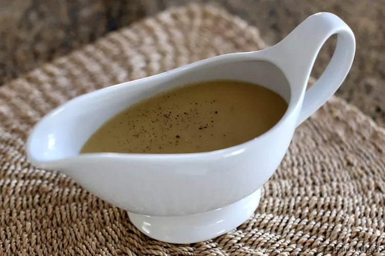

Gravy

Aren't all those Thanksgiving dishes we work so hard on
every year really just vehicles for savory turkey gravy?
Don't let your drippings go to waste this year — use them
to make an easy and flavorful turkey gravy from scratch for
your feast. Here's how to make turkey gravy from drippings,
step-by-step.
Ingredients
- 4 cups of turkey broth, chicken broth, water, or a combination of broth and water
- 1/4 cup of reserved turkey fat
- 1/2 cup of water, wine, turkey stock, or chicken stock
- 1/4 cup of all-purpose flour
- Salt and pepper to taste
- Optional: freshly chopped sage, a pinch of cloves, a sprinkle of thyme, and/or a touch of mace
Steps
- Make the base
- Deglaze the pan drippings
- Make a roux
- Combine the base and the roux
- Season the gravy